Scalar triple product (prodotto misto)
Definition 1.12.1. The scalar triple product of three vectors a,b and c is defined to be a ⋅ (b x c). □
In fact the brackets here are unnecessary since (a ⋅ b) is a scalar and it cannot be crossed with the vector c. Therefore the expression a ⋅ b x c is well defined.
The formula fro the scalar triple produt in term of the components of the three vectors a,b and c, can be obtained using the formula for the cross product:
a ⋅ b x c = a1b2c3 − a1b3c2 + a2b3c1 − a1b1c3 + a3b1c2 − a3b2c1
which can be written in the form of a determinant:
Hence the scalar triple product will have all the properties of a determinant. Since we can permute the rows of the determinant (with a sign change for an odd permutation, and with no sign change for an even permutation), we can permute the vectors a,b and c
The scalar triple product is invariant under any cyclic permutation of a,b and c:
a ⋅ (b x c) = (a x b) ⋅ c) = c ⋅ (a x b)
but any anti-cyclic permutation causes it to change sign
a ⋅ (b x c) = −b ⋅ (a x c)
If any of the two vectors are equal, the scalar triple product is zero.
Geometric interpretation
Geometrically, the magnitude of the scalar triple product is the volume of the parallelepiped with edges formed by the vectors a,b and c in ℝ3, as illustrated in stereo below.
The height of the parallelepiped is that part of a in the direction of a normal vector to b and c, i.e. the component of a in the direction b x c. We know that b × c is orthogonal to both b and c (Theorem 1.10.4a), so by trigonometry the height must be |a| cos θ for angle θ between a and b × c, as illustrated above.
a · (b × c) = |a| |b × c| cos θ
height = |a| cos θ = a · (b × c) /|b × c|)
The base of the parallelepiped is |b x c|, owing to the geometrical interpretation of the cross product.
The volume of the parallelepiped is then
The scalar triple product can be positive, negative, or zero. That's why we need the absolute value for the volume.